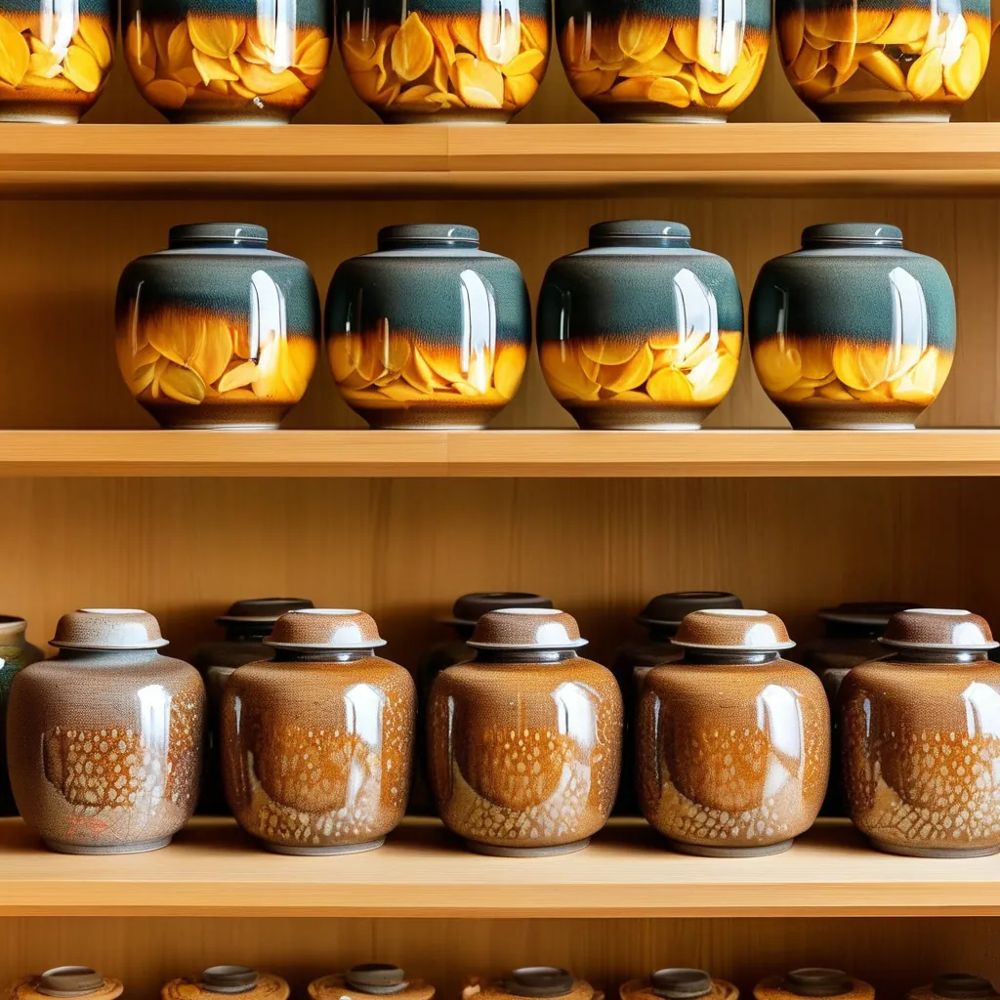
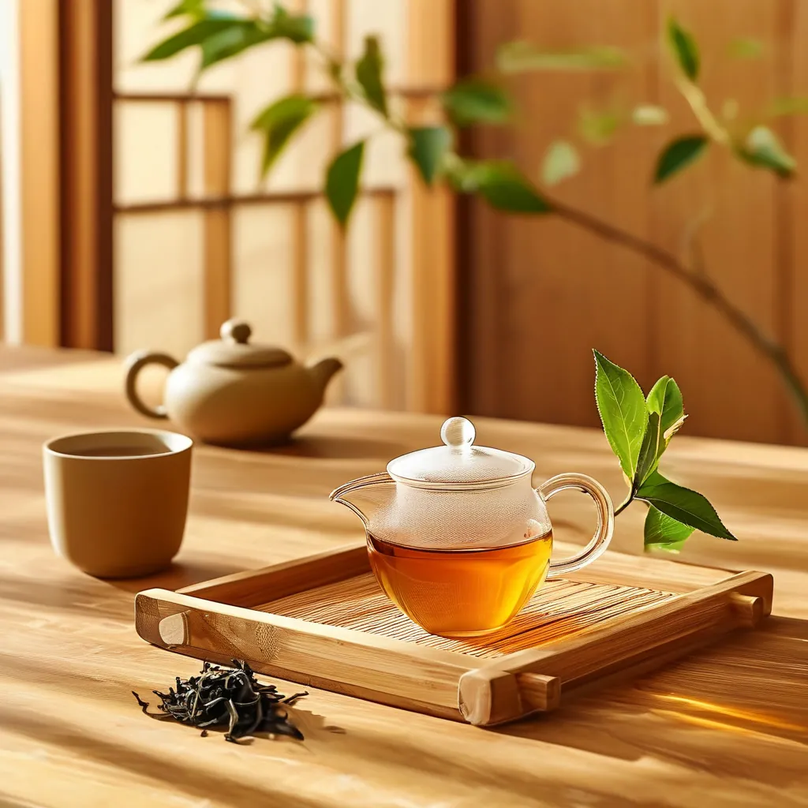
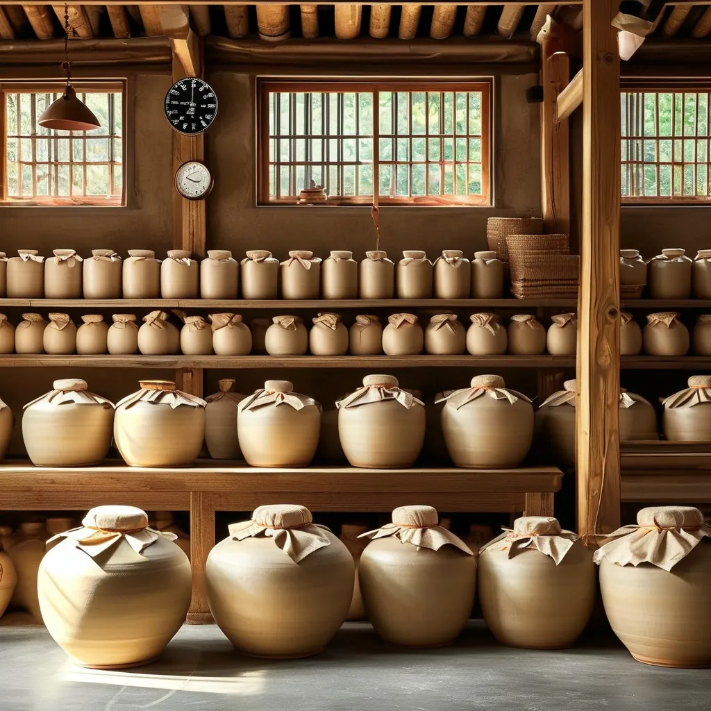
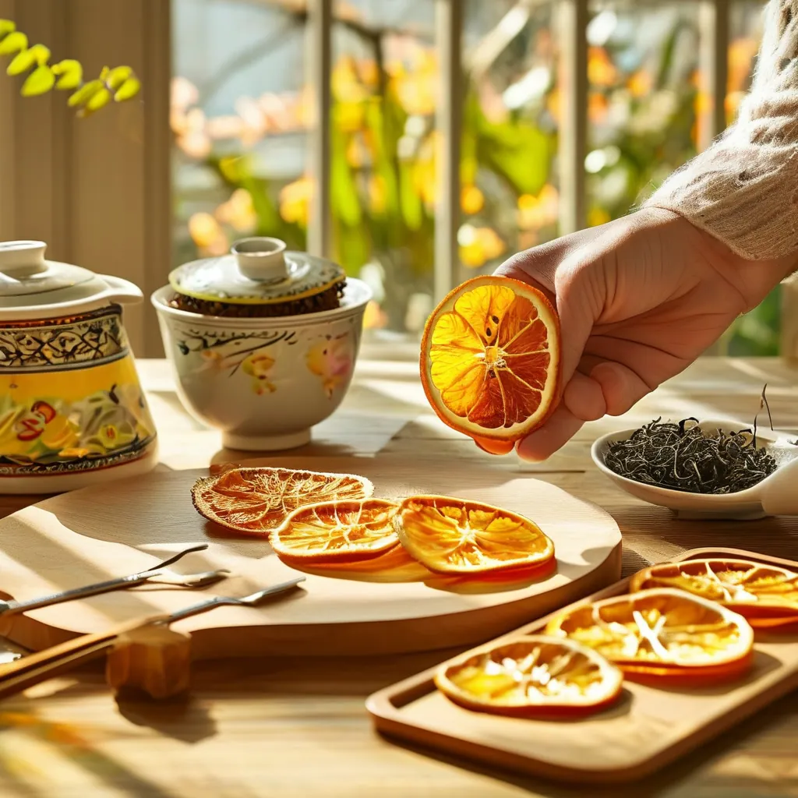

什麼是新會陳皮？
新會陳皮是廣東省江門市新會區特產，中國國家地理標誌產品。以茶枝柑皮為原料，經採摘、開皮、翻皮、曬乾、陳化等工序製成。
2006年獲國家地理標誌產品保護，2020年入選國家級非物質文化遺產。
核心產區
新會陳皮四大一線核心產區：
| 產區 | 特點 | 價格(10年/斤) |
|---|---|---|
| 天馬 | 香氣高揚、甜潤回甘 | ¥800-2000 |
| 梅江 | 醇厚濃鬱、藥香突出 | ¥700-1800 |
| 茶坑 | 香氣清雅、性價比高 | ¥500-1200 |
| 東甲 | 品質最優、產量稀少 | ¥1200-3000+ |
陳皮年份
3年
入門之選，可飲用，性價比高
入門之選，可飲用，性價比高
5年
黃金年份，藥效初顯，送禮首選
黃金年份，藥效初顯，送禮首選
10年
收藏入門，藥香濃鬱，升值潛力
收藏入門，藥香濃鬱，升值潛力
15年+
珍品級，極度稀缺，投資屬性
珍品級，極度稀缺，投資屬性

功效與作用
- 理氣健脾 — 改善消化不良、胃脹腹脹
- 燥濕化痰 — 緩解咳嗽痰多、胸悶氣短
- 降脂護心 — 降低膽固醇，保護心血管
- 抗氧化 — 清除自由基，延緩衰老

衝泡方法
煮飲法（推薦10年以上）：陳皮1片 + 500ml水，煮沸後小火煮5-8分鐘。
衝泡法（3-10年）：95℃以上熱水，浸泡3-5分鐘，可衝泡5-8次。
搭配：陳皮+普洱、陳皮+白茶、陳皮+雪梨，風味更佳。
存儲技巧
避光保存、通風透氣、濕度60%-70%、每年翻曬2-3次。用棉麻袋或陶瓷罐存放，忌用膠袋密封。

真偽鑑別
看：外皮棕褐自然，內瓤白色或淡黃，油室飽滿。
聞：香氣醇和持久，無刺鼻異味。
摸：柔軟有韌性，不易折斷。
嘗：微苦回甘，無酸澀味。
